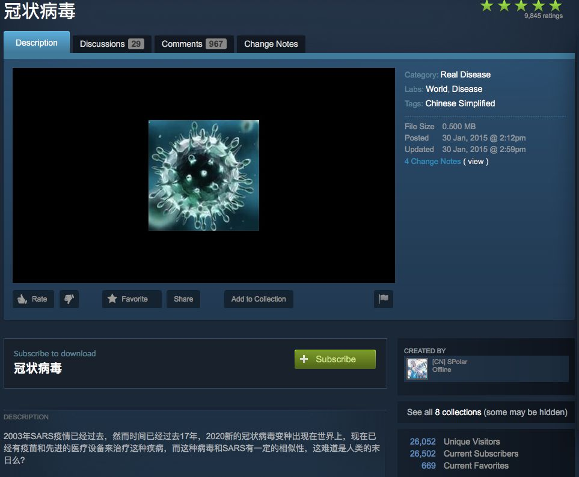
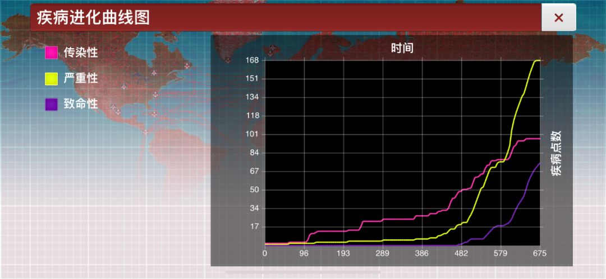
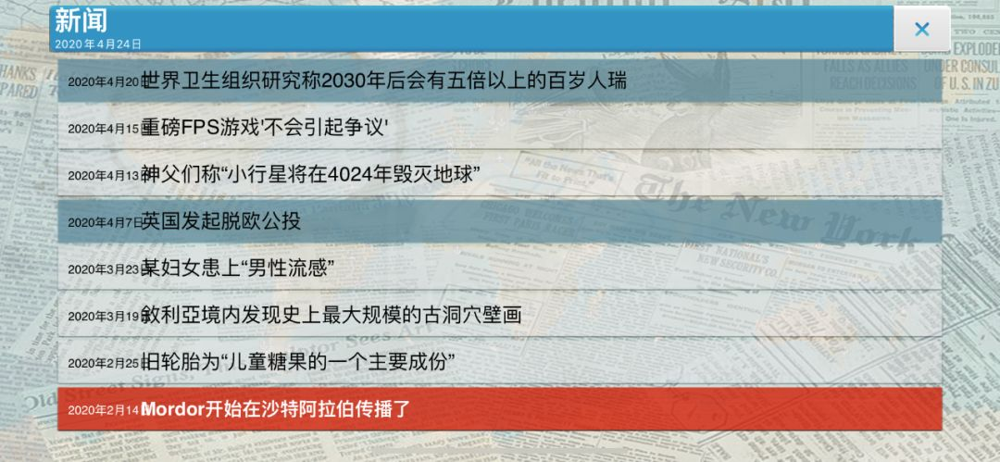
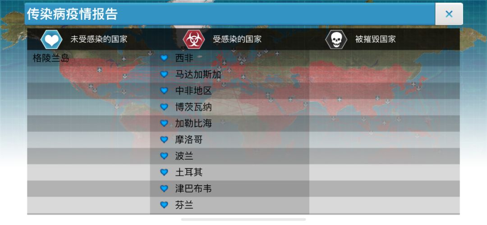
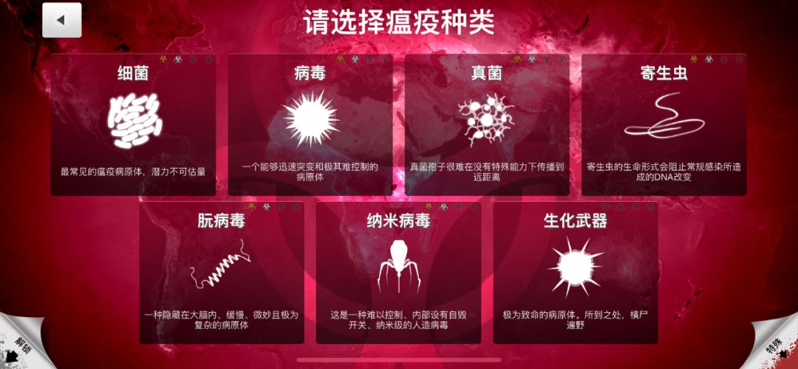
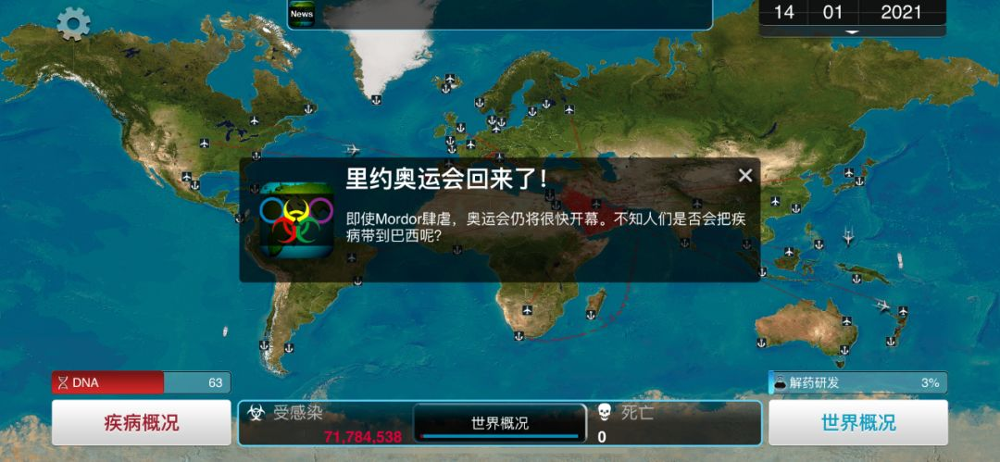
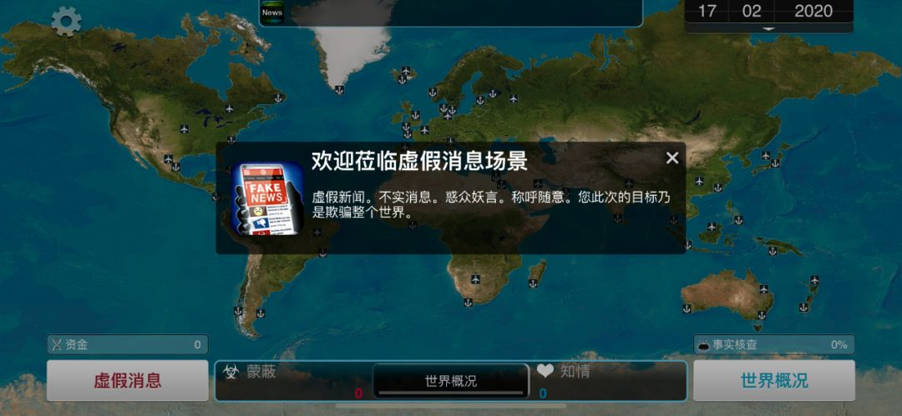

疫情蔓延，拿到逆势红包的在线游戏接下来怎么走？
原文链接 备份链接 _ 春节期间游戏玩家激增，给大部分游戏公司带去了高于往年的流水。要留住玩家，游戏公司面临越来越激烈的存量博弈 _ 文 |《财经》记者 王凤 编辑 | 谢丽容 这个春节，既是游戏人又是投资人的李昊，成功将《魔兽世界》介 …
洗手有多重要？
来复习一下标准答案：和戴口罩一样重要，有时可能还更重要。
经历了这么多天密集轰炸式卫生常识再教育，平时再懒的人，现在在洗手这件事上都勤快得不可思议，恨不得把手洗秃噜皮。
如果想加深自我教育，以沉浸式体验的方式进一步认识洗手的重要性，我推荐玩一回《瘟疫公司》。
这是一款不走寻常路的游戏：其他游戏里，玩家一般都要去拯救世界，但《瘟疫公司》正相反，我们要操纵细菌、病毒之类的病原体，进化出致命瘟疫，毁灭全世界。
简而言之，在这个游戏里，我们都是丧心病狂的反人类分子。
而反人类分子们毁灭世界时面临重大阻力之一，就是洗手。
进入游戏后，我们首先要选择难度等级，有简单、普通、困难三种模式。

如图，决定难度等级的第一条指标，就是全世界人民是否爱洗手。
大家都不爱洗手，瘟疫就很容易传播，即简单模式。所有人都洗手，瘟疫传播的难度就大大提高，就是困难模式。
如果你决定挑战困难模式，那么恭喜你，接下来艰难的通关历程会让你无比深刻地认识到：洗手这件简单的小事，真的能拯救世界。
《瘟疫公司》教给我们的知识点，远远不止洗手。玩过这个游戏的人，不光能大致了解细菌和病毒的不同，还能对世界地理有更深入的认识，甚至可以聊一聊商业推广的套路和谣言传播的机制。
所以说，打游戏确实能涨知识。不骗你。
新冠疫情爆发后，《瘟疫公司》无疑是讨论度最高的游戏，没有之一。
首先是一张“神预言”截图在社交媒体疯狂刷屏。这张来自《瘟疫公司》玩家自制的扩展包的截图显示，2015年就有人预测“2020年新的冠状病毒出现”，并且“和SARS有一定的相似性”。

而随着疫情发展，新冠病毒的传染性和隐蔽性，又令玩家们细思极恐。
在《瘟疫公司》中，传染性和致命性的关系，可以说是游戏的核心玩法和终极攻略。

游戏中，玩家需要精心控制瘟疫的症状。初期症状要尽可能轻微，最好不要致死。
这一方面是防止人们过早提高警惕，加快研制解药速度。另一方面，如果瘟疫早期致死率过高，会导致宿主死亡过快，来不及传染足够多的人。
同时，瘟疫的传染性则要尽可能提高。最理想的状况，是悄无声息地感染全世界。之后，再操纵病原体进行突变，进化成能迅速致命的瘟疫。
新冠病毒令人防不胜防的传染性和隐蔽性，颇为符合这个“悄悄感染全世界、一波大招全带走”的套路。好在游戏毕竟不是现实，《瘟疫公司》官方也及时敬告玩家，游戏中采用的并不是科学的传染病模型，“建议玩家直接从当地或国际权威机构获取信息”[1]。
《瘟疫公司》因这次疫情而广受关注，但它并不是因为蹭到了热点而翻红。从2012年问世起，它一直热度很高，常年出现在在各大付费游戏榜单上。
如此长盛不衰且广受欢迎，让人很难想象，这款游戏是一位市场分析咨询师用业余时间开发的，整个开发成本才不到5000美元。
游戏发售时，开发者James Vaughan的愿望仅仅是能收回这5000美元投资。而现在，他的游戏已经在各个平台卖掉了超过1亿份[2]。投入产出比无敌。
打开游戏，你立刻就能感受到低成本制作的贫穷气息。没有酷炫画面，游戏界面就是一张世界地图，传达信息全靠最简单的文字提示。

（请忽略我取名的水平）
不要小看这些文字信息。它实际上在提醒我们瘟疫的最可怕之处：不可预知。
每次瘟疫发生时，整个世界毫无察觉。滚动新闻里一片太平，世界卫生组织甚至还在乐观地预测人类将走向长寿时代。

而在游戏结尾时，人类大批死亡，国家相继垮台，令人触目惊心。

回过头看，当我们过着平静而琐碎的生活时，致命的瘟疫其实随时都有可能在身边悄悄发生，只是我们一无所知。
游戏开局，需要选择第一个感染瘟疫的国家。人口密度高的中国、印度，以及与世界各地几乎都有直通航班的沙特，都能让你的开局十分顺利。
这也对应了沉重的现实：作为一个人口众多的欧亚大国，中国防疫的外部条件确实相当不利。
而与我们相反，防疫外部条件最有利的国家，就是那些远离大陆的岛国。
譬如格陵兰，全境四分之三都处在北极圈内，偏居一隅、地广人稀、气候严寒，是各种病原体最难传染的地方。

于是在《瘟疫公司》中，格陵兰号称“人类之光”。无数次，你已经把整个地球都感染得差不多，而它还是一片白茫茫的净土。瘟疫杀死了全世界超过99%的人，却对格陵兰岛上不到6万人望洋兴叹。
游戏过程中，你会使用各种不同的病原体，它们的特征也都会在玩法中有所体现。

比如真菌这一关，就几乎让所有萌新打到自闭。
真菌很难远距离传播，想让它感染全世界的人非常困难。最常出现的状况是，你的真菌好容易才扩散到格陵兰和马达加斯加，但解药已经研制完成，Game Over。
游戏中还会出现各种随机事件，有些会加速瘟疫的传播，比如经常被触发的“里约奥运会”。
通常，人们会不顾疫情，如期举办奥运会，结果将瘟疫扩散到了更多国家。

此时再说“他们本不该去”，已经晚了。

当现实中有疫情正在发生、而且几乎就在身边时，重新玩《瘟疫公司》，不可避免地会感到一种额外的沉重。
你很难再以轻松的心态面对地图上数字的变化。因为关掉游戏回到现实，新闻里不断增长的感染者、死亡者数字背后，都是活生生的人。
游戏中，当你看着人类终于研究出解药、感染者大批恢复健康、瘟疫宣告终结时，并不会像平时输掉游戏时那样挫败。
相反，你可能会松一口气，并且偷偷希望：如果病毒能像我一样菜，那就太好了。
《瘟疫公司》让我们代入细菌病毒的视角去毁灭人类，而若干年前，《魔兽世界》的一次bug事故，则堪称是虚拟世界中的公共卫生事件。
2005年，《魔兽世界》1.7版本推出了一个20人团队副本。最终Boss有一个叫“堕落之血”的伤害技能，可以让玩家持续10秒钟不断掉血。“堕落之血”能传染，一旦中招，身边的队友和玩家在游戏里的宠物都会染上持续掉血状态。
一般来说，打完Boss，玩家和宠物身上的非正常状态就会随之消失。但因为出了bug，“堕落之血”在玩家的宠物身上潜伏了下来，而且依然具有传染性。
当不知情的玩家返回主城，重新放出宠物时，立刻感染了自己和大批人群。虚拟世界的瘟疫就此爆发。
大多数人的第一反应是不知所措。有人慌不择路地逃离主城，却不慎把“瘟疫”扩散到了其他地方。更有人不顾官方的劝告，故意带着“瘟疫”出城，到处感染别人。
同时，也有好心的玩家站在“疫区”门口，喊话提醒其他玩家不要贸然进入。一些玩治疗职业的玩家组成了救援队，不停地给受感染的玩家加血[3]。

（当时美服“尸横遍野”现场）
当然，这一切都发生在虚拟空间，因“瘟疫”而“死”的玩家都能复活。那些故意传播“瘟疫”的人，大多只是出于恶作剧或出风头的心理。但这些场景，依然足以映照出现实世界发生瘟疫时的众生相。
这场共计造成约400万玩家被感染的“瘟疫”，引起了传染病研究者的兴趣，因为它的发生和传播过程与现实中的传染病颇有相似之处。
比如，像许多新型病毒一样，它首先是从动物（游戏中的宠物）传播到人身上，然后经由“零号病人”实现人传人。
《魔兽世界》的运营者暴雪公司，一度也采取了类似于建立隔离区的方式阻止“瘟疫”蔓延，但效果不佳。这同样和现实世界瘟疫爆发时的情况如出一辙。国际货币基金组织2006年的一份报告曾指出，尽管各国可以采取关闭边界、交通管制等方式，但这只能延缓、而无法彻底阻止疫情的蔓延。
不过，《魔兽世界》终究是一个游戏。当一切措施无效时，运营者可以改掉bug，重启服务器，“瘟疫”也就会随之结束。而在现实世界的公共卫生领域，没有这样手到病除的选项[4]。
在虚拟生活与现实世界无限接近的当下，游戏已经不只是现实的映射。它的影响力在逐步扩展到线下，并与现实议题互动。
早在2013年，美国疾控中心就曾邀请《瘟疫公司》制作人James Vaughan做演讲，主题是如何为瘟疫传播建立模型，以及这款游戏如何提高公众对传染病的认识[5]。
此后，《瘟疫公司》一直在向寓教于乐的方向发展。去年，他们新增了三个新场景，其中两个都颇具现实教育意义。
一是“科学否定”，针对的是最近在国外兴起的“反疫苗者”。这群人因为无知或迷信，反对现代医学，拒绝打疫苗，不但害自己，而且也会导致所在地区传染病威胁上升，危害他人。
“科学否定”场景设定的是一个被反科学者支配的世界。科学家被放逐、研制解药受阻，甚至连研发出来的解药都会被摧毁。有评论说，在这样一个世界里，游戏直接进入了超简单模式[6]。
“科学否定”是对反疫苗、反科学者的反讽，另一个场景“虚假消息”，则是对造谣者的反讽。
“虚假消息”场景中，不再有细菌、病毒，你需要扮演一个超级谣棍，把你的谣言传播到全世界。

在某种意义上来说，谣言就相当于是一种精神上的传染病，所以能近乎无缝套用《瘟疫公司》的游戏机制。
你可以选择要传播的谣言类型、发源者、造谣动机，然后随着谣言不断传播，使用各种传谣技巧：捏造细节、模糊关键信息、指责质疑者动机、挑动公众情绪、假“反转”、将辟谣者拖进无休止的细节纠缠……
“虚假消息”的难度并不高，但它的意义并不在于攻略技巧，而是其中呈现的炮制谣言的伎俩。仔细看来，许多都如此似曾相识。
无论是疾病、迷信还是谣言，《瘟疫公司》作为一个本身并不承担教育功能的的游戏，已经给了我们足够的知识和警示。
比起游戏赚了多少钱、创造了多高的日流水，这可能才是“虚拟照进现实”的最佳打开方式。
参考资料：
[1] “Statement on the Current Coronavirus Outbreak”, Ndemic Creations
[2] 《霸榜7年，<瘟疫公司>玩家破1.2亿，开发者访谈》，GameLook微信公号
[3] L. Sydell, “’Virtual’ Virus Sheds Light on Real-World Behavior”, NPR
[4] A. Marshall, “Online ‘Blood Plague’ Offers Lessons for Pandemics”, Reuters
[5] 陆新宇：《我用游戏了解疾病的可怕，“恶意满满”的<瘟疫公司>背后是善意》，AppSo微信公号
[6] 跳跳：《一群热爱科学的玩家“迫使”<瘟疫公司>添加了一个超级简单模式》，游戏研究社微信公号
*本文图片来自游戏及网页截图
原文链接 备份链接 _ 春节期间游戏玩家激增，给大部分游戏公司带去了高于往年的流水。要留住玩家，游戏公司面临越来越激烈的存量博弈 _ 文 |《财经》记者 王凤 编辑 | 谢丽容 这个春节，既是游戏人又是投资人的李昊，成功将《魔兽世界》介 …
原文链接 备份链接 尽管市场已经消化了短期需求下降和供应链短暂中断的因素，但更广泛的间接影响还没有被消化。 每个人都认为，如果需求回升，一切都会反弹；但以往的事件表明，并非每家公司都会以同样的方式受益 *******文 | 《巴伦》撰稿人 …
原文链接 备份链接 图片来源：视觉中国 记者 | 潘金花 “ “各国应该做的，是继续遏制病毒的传播，减少人们与病毒的接触，隔离病例并追踪接触者。中国在这方面已做出很大的努力，和疫情刚爆发时相比，中国显然已经延缓了疫情蔓延至全球的速度。” …
原文链接 备份链接 “真的要宅疯了！” 这可能是疫情暴发之后，众多宅在家里的人内心中一致的想法。新型冠状病毒肺炎这只“黑天鹅”从武汉飞出来以后，迅速蔓延全国。 居家隔离、远程办公、大学生放假时间延长，这一系列的行为成为人们的共识。在这种背 …
原文链接 备份链接 人类的发展史，就是疾病的增加史2月1日，武汉市汉口新华路上，在疑似新型冠状病毒感染者排队确诊的队伍旁，一名现场维持秩序的警察正在做防护准备。摄影/长江日报 金思柳 认识一下“新冠君”，人类疾病的新成员 *本刊记** …